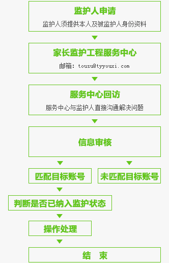

“网络游戏未成年人家长监护工程”由中华人民共和国文化部指导，旨在加强家长对未成年人参与网络游戏的监护，引导未成年人健康、绿色参与网络游 戏，和谐家庭关系的社会性公益行动。它提供了一种切实可行的方法，一种家长实施监控的管道，使家长纠正部分未成年子女沉迷游戏的行为成为可能。
该项社会公益行动充分反映了中国网络游戏行业高度的社会责任感，对未成年玩家合法权益的关注以及对用实际行动营造和谐社会的愿望。
查看《未成年人健康参与网络游戏提示》 服务联系方式
服务联系方式网络游戏未成年人家长监护工程
“网络游戏未成年人家长监护工程”是一项由网络游戏企业共同发起并参与实施，由中华人民共和国文化部指导，旨在加强家长对未成年人参与网络游戏的监护，引导未成年人健康、绿色参与网络游戏，和谐家庭关系的社会性公益行动。它提供了一种切实可行的方法，一种家长实施监控的管道，使家长纠正部分未成年子女沉迷游戏的行为成为可能。
具体实施细则如下：
一、申请条件
1、申请人需为被监护未成年人的法定监护人；
2、申请人的被监护人年龄小于18周岁；
3、申请人需为大陆公民，不含港、澳、台人士。
二、申请需要提交材料
1、监护人信息表（包含监护人的身份证明复印件）；
2、被监护人信息表（包含被监护人所玩游戏相关信息及身份证明复印件）；
3、填写未成年人家长监护申请书、起诉保证书、授权书并手工签字（需下载，填写并打印，签字）；
4、申请人与被监护人的监护关系证明文件（户口簿或有关机关出具的证明文件）。
三、申请方式
您可以通过联系电话、邮件或来访的方式联系我们：
传真服务：021-5080-0679
服务邮箱：tousu@tyyouxi.com
公司地址：上海市张江高科金科路2966号
未成年人健康参与网络游戏提示

家长监护工程帮助
Q1：可以通过什么渠道申请家长监督未成年人账号？
A：目前您可以通过专线电话、网络接待方式来咨询，然后采取邮寄材料的方式进行申请
Q2：怎样可以咨询和申请？
A：您可以通过以下方式咨询和申请——
服务传真：021-5080-0679
公司地址：上海市张江高科金科路2966号
邮编：201203
Q3：申请监护未成年人账号方式有哪些？
A：我们会在确认您提供的信息无误后，根据您的要求提供以下处理方案：
1、将该账号纳入未成年人家长监护系统；
2、根据监护人意愿屏蔽相关游戏应用登录或进行封停；
3、将账号与监护人手机绑定，使监护人实时获得账号游戏时间信息或者定期向监护人通报其所投诉的 游戏账号的在线游戏时间统计
4、根据监护人的要求，限定只有周末2天可以进行游戏；
5、经过监护人确认每天游戏的时间；
6、对账号登录采取其他措施。
Q4：申请监督的账号有什么要求？
A：账号所属人必须未满18周岁。
Q5：申请人有什么要求？
A： 1、申请人应提交较完备的申请材料，对未提供的信息要及时补充；可请熟知电脑、互联网、游戏的人员进行协助，以便提供详实资料；
2、申请人应保证提交的信息真实有效；对于提供虚假信息或伪造证件，受理公司将保留进一步追究法律责任的权利。
Q6：申请监督未成年人账号需要提供什么？
A：您需要提供监护人身份证复印件、账号所属人身份证复印件以及户口本复印件、如双方户籍不在一起，需要提供公安机关监护证明、被监护人信息表、监护人信息表、家长监护申请书（申请书、保证书、授权书，需要下载，填写，并打印，手工签字）。
Q7：申请人提交申请后，多久可以处理完成？
A：我们将以最快的速度进行核实处理，由于您提供的材料不同，任何步骤有疑问，我们都会与您联系。
Q8：申请成功后，如果需要取消监督如何操作？
A： 1、您可以通过上门或传真方式提供申请监督时的相关信息，申请解除监督；
2、被监护账号所属人年满18周岁可提供申请监督时的相关信息进行申请结束监督
未成年人健康参与网络游戏提示
随着网络在青少年中的普及，未成年人接触网络游戏已经成为普遍现象。为保护未成年人健康参与游戏，在政府进一步加强行业管理的前提下，家长也应当加强监护引导。为此，我们为未成年人参与网络游戏提供以下意见：
一、主动控制游戏时间。游戏只是学习、生活的调剂，要积极参与线下的各类活动，并让父母了解自己在网络游戏中的行为和体验。
二、不参与可能耗费较多时间的游戏设置。不玩大型角色扮演类游戏，不玩有PK类设置的游戏。在校学生每周玩游戏不超过2小时，每月在游戏中的花费不超过10元。
三、不要将游戏当作精神寄托。尤其在现实生活中遇到压力和挫折时，应多与家人朋友交流倾诉，不要只依靠游戏来缓解压力。
四、养成积极健康的游戏心态。克服攀比、炫耀、仇恨和报复等心理，避免形成欺凌弱小、抢劫他人等不良网络行为习惯。
五、注意保护个人信息。包括个人家庭、朋友身份信息，家庭、学校、单位地址，电话号码等，防范网络陷阱和网络犯罪。
文化部网络游戏内容审查委员会
中国教育学会中小学信息技术教育委员会
中国青少年网络协会
二〇一〇年五月二十八日